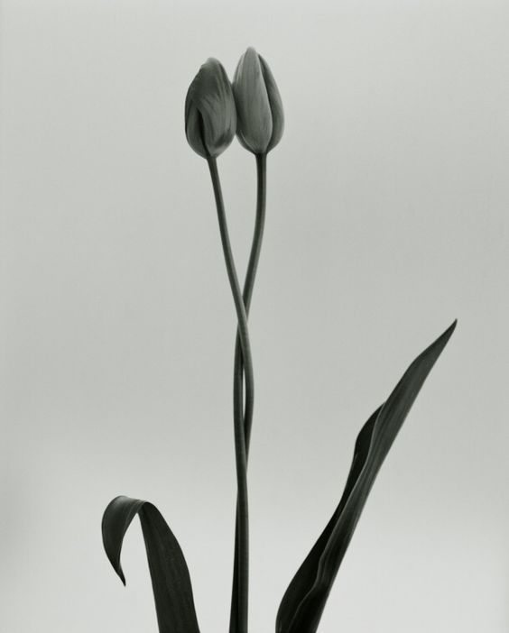

What we do
01
Happily Ever After
동화의 마지막 문장을
두 사람의 첫 문장으로.
결혼식은 하루이지만, 부부가 되는 일은 매일의 이야기라고 생각했습니다.
永愛
영원할 영, 사랑 애.
오래도록 사랑하기를 바라는 마음을 이름에 담았습니다.

Happily Ever After
결혼식은 하루이지만, 부부가 되는 일은 매일의 이야기라고 생각했습니다.
永愛
영원할 영, 사랑 애.
오래도록 사랑하기를 바라는 마음을 이름에 담았습니다.
Beautiful Curiosity
우리는 사랑을 정의하기보다,
두 사람의 사랑을 조금 더 궁금해합니다.
Together.
과하지 않은 말과 자연스러운 호흡으로
그날의 마음이 오래 남도록 함께 준비합니다.
What we do
문의 주시면 질문지를 보내드립니다. 예식 정보와 두 분만의 이야기, 원하는 분위기를 편하게 들려주세요.
초안을 보내드리면 그대로 좋은 문장과 고치고 싶은 부분을 알려주세요. 두 분다운 문장이 될 수 있도록 함께 다듬어갑니다.
완성된 대본으로 그날의 사회를 맡습니다. 과하지 않게, 두 분의 속도로.
예식이 끝난 뒤, 그날의 장면을 편지로 정리해 전해드립니다. 오래도록 다시 꺼내볼 수 있도록.
Price
우리는 사회만 진행하지 않습니다.
질문을 통해 이야기를 듣고, 그 이야기를 문장으로 만들고,
그 문장이 결혼식이 되도록 함께합니다.
본식 사회
390,000원
두 사람의 이야기를 담은 맞춤 대본과 함께,
결혼식의 시작부터 마지막까지 편안하게 진행합니다.
함께 만드는 과정
함께 전해드리는 것
함께 드리는 문장
결혼은 하루로 끝나지 않습니다.
청첩장에서 시작된 문장은, 결혼식을 지나, 감사의 인사까지 이어집니다.
Everafter는 식전과 식후에 사용할 수 있는 SNS 문장 모음을 함께 제공합니다.
원하는 분위기의 문장을 선택해 편하게 사용할 수 있습니다.
Everafter Letter
예식이 끝난 뒤, 두 사람의 이야기와 그날의 장면을 담아 전하는 작은 기록입니다.
오래도록 다시 꺼내볼 수 있도록, 완성되면 따로 전해드립니다.
더할 수 있는 것
두 사람의 이야기를 담아 청첩장 첫 문장을 함께 작성합니다.
피로연 또는 2부 행사까지 자연스럽게 이어서 진행합니다.
서울 외 지역은 거리별 출장비가 추가됩니다.